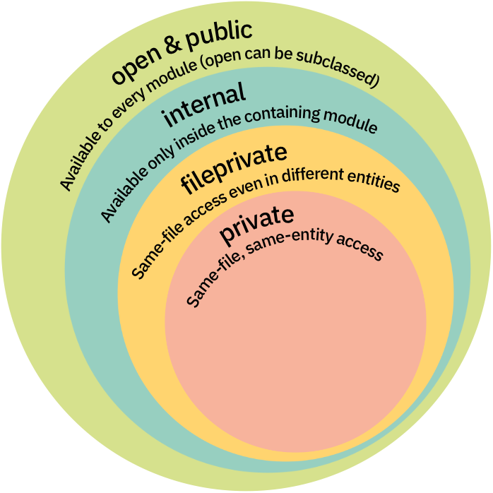
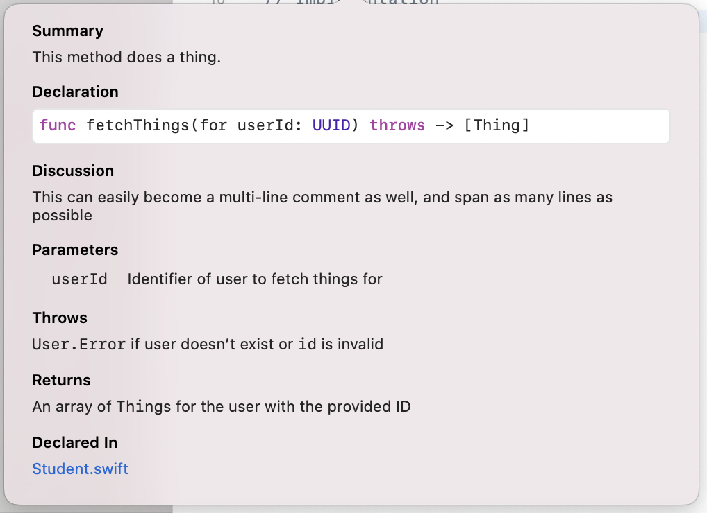
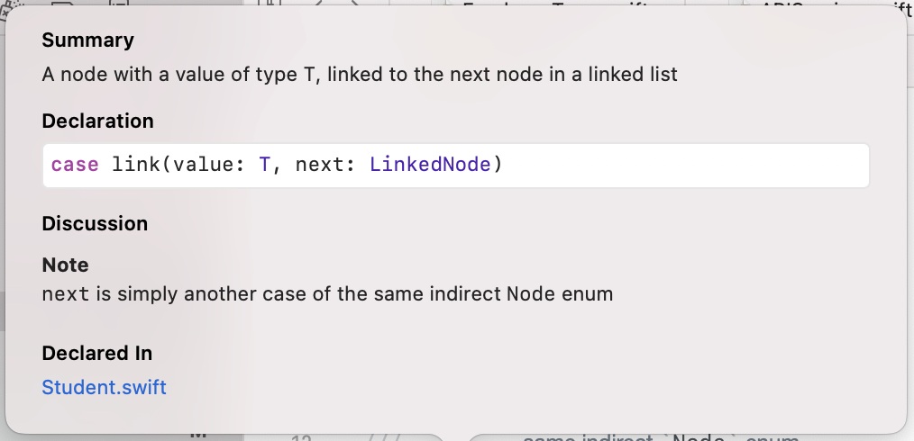
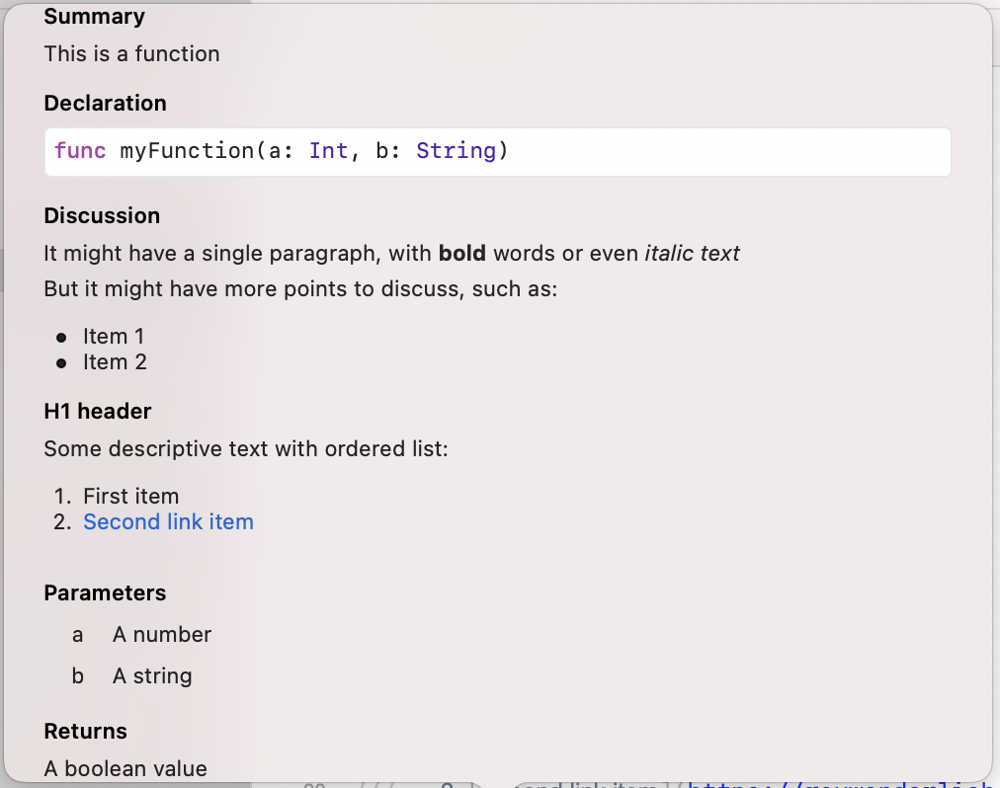
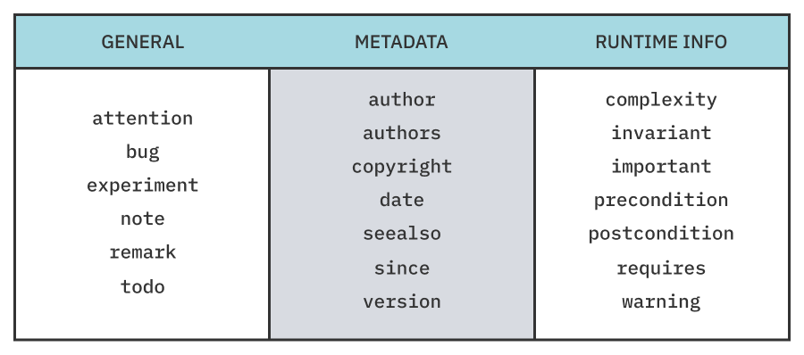

Chapter 14: API Design Tips & Tricks¶
Welcome to the last chapter of the book!
You’ve spent most of your time in this book diving into specific topics, learning how they work, writing code to sharpen your instincts around them and working through real-life examples.
Although using Swift and all its incredible capabilities is a wonderful skill to have, it doesn’t help much without actually shipping code with it. More often than not, though, you’ll find yourself creating code that’s used not only by you but also by your team, or even other teams if you’re creating an open-source project.
In those cases, just knowing Swift as a language isn’t enough, and neither is just practicing a specific language feature. That’s why this chapter is going to be a bit different.
In this chapter, you’ll explore a few different topics. Each of these isn’t directly related to the previous one, but they all tie into enhancing your skillset and intuition for designing great APIs. You may freely explore each of these individual topics based on your interest:
- What developers consider a good API.
- How to separate and encapsulate your implementation details from your public API using access levels.
- Powerful language features with examples you can leverage for your APIs, including examples from Swift itself: Literals, Dynamic Member Lookup, Dynamic Callable, Property Wrappers and others.
- Documenting your APIs using Swift’s powerful markup syntax.
- Finally, a few important concepts and ideas related to the process of shipping your API to the world.
This chapter will also be less code-heavy than previous ones and won’t require you to copy-paste code or run any project. It’s more of a philosophical and exploratory chapter that doesn’t cover one specific topic. You’re welcome to stop at any point to experiment with a specific idea in Xcode. We’re opening a discussion together, me and you, to hopefully help inspire you with some fresh new ideas and ways of thinking about API design.
Note: API design is a highly opinionated topic. As such, you should take everything in this chapter with a grain of salt and mainly as an inspiration rather than a single truth. Take the portions that make sense for your use case and taste, and discard the ones that don’t.
What do developers want?¶
Wow, that’s a tough question. I wish I knew, really; it might’ve helped bring this book even further! And yet, some things are obvious and universal for developers.
The first time a developer interacts with a new piece of code, they have certain hopes and expectations. It doesn’t matter if that code is your app and the person is a new developer on your team, or if it’s an open-source library you shared with the community and the person is a new consumer of it.
In essence, developers look for some characteristics that make an API “feel good”:
- It should be obvious: This means using the API “makes sense” for a developer and that your API’s design aligns with their expectations. For example, a
Zipclass might have an expected method calledunziporextractrather thanpullContentsTo(path:), which is not common or obvious. - It should be well-documented: People often say Swift is a self-documenting language and, as such, good APIs don’t need documentation. I personally disagree with that statement. Even though Swift is a very expressive language, documenting the public portions of your API is language-agnostic and crucial to help self-exploration, reduce ambiguity and make sure your intention is clear to the consumer. It would be good for internal APIs to also be documented well, but public-facing documentation is the bare minimum.
- Reduces mental load: This ties to being obvious but is a bit broader and more open to interpretation. Some things that fall into this category include trying to use the minimum obvious naming for APIs, using prior art if a convention exists in the domain you’re developing for (you might use
Viewinstead ofScreenif it makes sense in that domain, for example) and using abstractions that are simple to the consumer. As the Swift API guidelines sharply note: “Don’t surprise an expert. Don’t confuse a beginner.” - Being modern: This point touches a wide range of topics. Using proper language-specific conventions, leveraging the correct language features a consumer would expect to see and inspiring proper usage and creativity from the consumer are all small parts of this point.
What is the core of your API?¶
When the raywenderlich.com team works on a tutorial or a book, it always asks: “What is the most important 80 percent of this topic?”
When exposing some API or functionality to the outside world, you should ask yourself the same question, in a way: “What is the core functionality of this framework or API?”
This starting point might seem obvious, but it’s so crucial because it helps dictate where you’ll spend most of your effort forging an easy-to-use and explorable API.
It’s the exact point when you start differentiating your public-facing API from your implementation details that aren’t quite relevant to the majority of your consumers.
A great way to enforce this separation is by using access levels.
Using access levels properly¶
Access levels define which entities of your code are exposed and to which scopes they’re exposed. Swift specifically provides a relatively fine-grained set of five access levels (from most permissive to most restrictive): open, public, internal, fileprivate and private.

If you’ve never written code meant to be consumed outside your app, you might not understand the need for such a level of control over your code and its entities. But it’s crucial to understanding what each level means and when to use it.
Internal by default¶
Every piece of code that doesn’t have an explicit access level set is internal by default. This means other files in the same module can access it, but files outside of the module can’t.
If Module2 defines func getThings(), a different Module1 won’t be able to access getThings(), unless it’s annotated with public.
// In Module2
func getThings() {
}
// In Module1
Module2.getThings()
// Error: Module 'Module2' has no member named 'getThings'
This is great for most apps. It means every piece of code you write is accessible for every part of your app because it’s usually a single module. But what if you want to split your app into several modules or share code as a public library/framework?
The public world¶
In cases where internal doesn’t suffice, you’ll want to use either open or public. These levels mean the same thing in essence: This entity is available to every piece of code inside or outside the module it was defined in.
This means you might want to make your UserService public to let anyone consume it but keep NetworkService internal because only your module cares about it.
// In Module1
public class AmazingClass {
public init() { }
}
open class WonderfulClass {
public init() { }
}
// In Module2
AmazingClass() // OK
WonderfulClass() // OK
open lifts an additional limitation and allows overriding or subclassing a class marked with that access level. This makes open relevant only for classes and not other types, where public would have the same effect.
class AmazingSubclass: AmazingClass { } // Error: Cannot inherit from non-open class 'AmazingClass' outside of its defining module
class WonderfulSubclass: WonderfulClass { } // OK
Keeping it private¶
With public and open representing the more permissive side of the possible access levels, it’s also critical to properly limit access to the private portions of your code. These pieces of code are often implementation details and don’t concern consumers of your public interface or even your internal interfaces.
Swift offers two private access levels:
privatemakes an entity available only to the file it was defined in, and in the specific scope it was defined in.- In contrast,
fileprivatemakes an entity available only to the file it was defined in but also in different object scopes.
For example, imagine an Encrypter type that can encrypt various types:
struct Encrypter<Encrypted> {
let base: Encrypted
}
Then, imagine you have a Person struct with a private property called password:
struct Person {
let id: UUID
let name: String
private let password: String
}
If you extend Encrypter in the same file to provide encryption for Person, like so:
extension Encrypter where Encrypted == Person {
func encrypt() -> String {
sha256(base.password)
}
}
You’ll get an error because password is only accessible in Person’s scope within the file:
‘password’ is inaccessible due to ‘private’ protection level.
If you change private to fileprivate, the code will work, extending password’s access scope to other types in the same file.
Finally…¶
No, this isn’t the end of the chapter, but final has a different meaning you should know. I mentioned that public means an entity is public outside of a module but can’t be overridden and subclassed.
Another useful keyword is final, which essentially means the same thing but also applies to the module scope. This means a final class can’t be overridden or subclassed, inside or outside of the module.
This is more useful in an app’s scope or a tightly-held module because it limits what can be done with that class. It also helps the compiler perform optimizations because it can know for a fact that none of the methods can be overridden and the class will remain unchanged:
final public class Network {
// Code here...
}
class SpecializedNetwork: Network { } // Error: Inheritance from a final class 'Network'
Some of this information might be harder to figure out in a large class or code base. Luckily, Xcode can help out a bit with generated interface previews.
Exploring your interface¶
A great feature built into Xcode is the ability to view the generated interface of source files. You used this a bit earlier in this book, in the “Objective-C Interoperability” chapter, but you can use the same capability for Swift files, too.
If you put the following code in a Swift file:
import Foundation
public struct Student {
public let id: UUID
public let name: String
public let grade: Int
let previousTests: [Test]
public func sendMessage(_ message: String) throws -> Bool {
// Implementation
}
private func expel() throws -> Bool {
// Implementation
}
}
struct Test {
let id: UUID
let name: String
let topic: String
}
And then go to the Related Items icon and pick the generated interface for your Swift file:

You’ll see the full interface generated from your Swift source:
public struct Student {
public let id: UUID
public let name: String
public let grade: Int
internal let previousTests: [Test]
public func sendMessage(_ message: String) throws -> Bool
}
internal struct Test {
internal let id: UUID
internal let name: String
internal let topic: String
}
Notice how the private methods aren’t part of the interface and all the implicitly internal definitions show internal explicitly.
This a great way to get an “eagle’s eye” view of your codebase, stripping out the implementation details and anything in the private scope.
Now that you have a good grasp of the higher-level ideas of good API design and encapsulation, you’ll also want to know how to leverage specific Swift language features to enrich your API.
Language features¶
This section will focus on some interesting language features you can leverage to improve your API surface, and provides short examples of how API designers and developers commonly use them.
Although using the latest and greatest language features isn’t a hard requirement for API design, it’s extremely valuable to know the tools at your disposal to forge the most natural and modern-feeling API possible for your consumers. You’ll learn more about this throughout this section.
Literals¶
Literals are a great abstraction to let consumers initialize your types using typed literals, such as String, Bool, Array and many others.
A great example of this is a Path type, using ExpressibleByStringLiteral:
public struct Path: ExpressibleByStringLiteral {
private let path: String
public init(stringLiteral value: StringLiteralType) {
self.path = value
}
public func relativePath(to path: Path) -> Path {
// Implementation ...
}
}
You can then initialize it by simply using a string literal:
// Option 1
Path("/Users/freak4pc/Work/")
// Option 2
let path: Path = "/Users/freak4pc/Work/"
The great power of this feature is that it creates a relatively smooth and seamless developer experience while still providing type safety and additional features related to the specific initialized type. In Path’s case, it can expose a relativePath(to:) method that isn’t relevant for any String but is interesting for Paths.
You can do the same with other expressible types, such as Arrays:
public struct AlphabeticArray<Element: Comparable>: Collection, ExpressibleByArrayLiteral {
// Additional collection boilerplate here
let values: [Element]
public init(arrayLiteral elements: Element...) {
self.values = elements.sorted(by: <)
}
}
public func presentContacts(_ contacts: AlphabeticArray<String>) {
print(contacts)
}
presentContacts(["Shai", "Elia", "Ethan"]) // Prints Elia, Ethan, Shai
This example is a bit contrived, as you could achieve the same effect by simply using sorted(by: <) internally. But it does provide a type-safe guarantee that you can always expect values in that array to be sorted alphabetically, which improves clarity in the API surface.
Another possible use case for literals is for a headers object in a networking library:
public struct Headers {
private let headers: [String: String]
// Many other pieces of headers-specific functionality
}
extension Headers: ExpressibleByDictionaryLiteral {
public init(dictionaryLiteral elements: (Header, String)...) {
self.headers = Dictionary(uniqueKeysWithValues: elements.map { ($0.rawValue, $1) })
}
public enum Header: String {
case accept = "Accept"
case contentType = "Content-Type"
case authorization = "Authorization"
case language = "Accept-Language"
// Additional headers
}
}
This implementation lets you initialize a new Headers object from a dictionary with strictly typed keys, like so:
class HTTPRequest {
func addingHeaders(_ headers: Headers) -> Self {
// Implementation ...
}
}
let request = HTTPRequest(...)
.addingHeaders([.accept: "text/html",
.authorization: "Basic freak4pc:b4n4n4ph0n3"])
You can take this a step further and add ExpressibleByArrayLiteral conformance in addition to the dictionary literal conformance and count on enums with associated values:
extension Headers: ExpressibleByArrayLiteral {
public init(arrayLiteral elements: TypedHeader...) {
self.headers = Dictionary(uniqueKeysWithValues:
elements.map(\.value))
}
public enum TypedHeader {
case accept(AcceptType)
case jwtAuthorization(Token)
case basicAuthorization(user: String, password: String)
var value: (String, String) {
switch self {
case .accept(let type):
return ("Accept", type)
case .jwtAuthorization(let token):
return ("Authorization", "Bearer \(token)")
case let .basicAuthorization(user, password):
return ("Authorization", "Basic \(user):\(password)")
}
}
}
}
This lets you use the following code:
let request = HTTPRequest(...)
.addingHeaders([.jwtAuthorization("AmazingToken"),
.basicAuthorization(user: "freak4pc",
password: "b4n4n4ph0n3"),
.accept("text/html")])
Because these both are literals, you can also instantiate them simply by providing an explicit type when using an array or dictionary:
let headersFromDict: Headers = [
.accept: "text/html",
.authorization: "Basic freak4pc:b4n4n4ph0n3"
]
let headersFromArray: Headers = [
.jwtAuthorization("AmazingToken"),
.basicAuthorization(user: "freak4pc",
password: "b4n4n4ph0n3"),
.accept("text/html")
]
Both of these are actual Headers objects, not a Dictionary or Array.
The options around literals are quite endless, but they’re all about making your API surface pleasant and seamless to use while still providing a specialized experience for the typed use case in question.
Take your time to experiment with the full list of possible literal conformances on Apple’s documentation.
Dynamic member lookup¶
Dynamic member lookup was initially shipped in Swift 4.2 (SE-0195) and meant to provide a somewhat type-safe way to access arbitrary string keys for a type. This was relatively helpful to bridge dynamic languages, such as Python, or create proxy APIs. Unfortunately, it lacked real type-safety when it came to abstracting existing Swift code as well as providing actual runtime safety.
Luckily, Swift 5.1 introduced key path member lookup (SE-0252), which gives you the same dynamic handling capabilities but for a key path to an object. This is one of the most underrated and useful language features brought into Swift in recent years, and it unlocks a wide range of opportunities to improve your APIs.
Wrapping types naturally¶
It’s quite common to create types that would wrap existing types. An example of this might be trying to create your own SearchBar view that wraps a regular UITextField:
class SearchBar: UIControl {
private let textField: UITextField
}
You might notice there’s a 1-to-1 relationship between a search bar and a text field. For example, you might want SearchBar.isEnabled to disable the text field itself, or SearchBar.keyboardType to change the underlying textField.
You could consider doing this manually:
extension SearchBar {
var isEnabled: Bool {
get { textField.isEnabled }
set { textField.isEnabled = newValue }
}
var keyboardType: UIKeyboardType {
get { textField.keyboardType }
set { textField.keyboardType = newValue }
}
// About 20 more of these ...
}
But this is quite tedious, and it can also hinder maintainability and require a lot of manual work. What if UITextField gets some new properties in the future?
Luckily, there’s a way to get rid of all this boilerplate:
@dynamicMemberLookup
class SearchBar: UIControl {
private var textField: UITextField
subscript<T>(
dynamicMember keyPath: WritableKeyPath<UITextField, T>
) -> T {
get { textField[keyPath: keyPath] }
set { textField[keyPath: keyPath] = newValue }
}
}
Once you add the @dynamicMemberLookup annotation to SearchBar, Swift will look for both the string-based and key path-based subscripts.
In this case, a generic writable key path from UITextField to any of its properties means you can access any property of UITextField directly from SearchBar without more boilerplate code. For example:
let searchBar = SearchBar(...)
searchBar.isEnabled = true
searchBar.returnKeyType = .go
searchBar.keyboardType = .emailAddress
// etc, etc...
Enriching key paths¶
Exposing or mirroring the key paths of a linked object is extremely useful, but you can return anything you want from the dynamic member subscript method.
This means you can wrap the typed key path in any other type to enrich the original property with more capabilities.
A good example of this is RxSwift’s use of @dynamicMemberLookup to expose Binders, a RxSwift-specific abstraction, for every property of an object on top of RxSwift’s .rx namespace:
@dynamicMemberLookup
struct Reactive<Base> {
// Additional implementation details...
subscript<Property>(
dynamicMember keyPath: WritableKeyPath<Base, Property>
) -> Binder<Property> where Base: AnyObject {
Binder(base) { base, value in
base[keyPath: keyPath] = value
}
}
}
This example lives under the .rx namespace in RxSwift and allows regular (as opposed to “enriched”) access to the property:
myView.isEnabled // Bool
myView.rx.isEnabled // Binder<Bool>
Dynamic callable¶
Dynamic callable was introduced in Swift 5 (SE-0216) to provide syntactic sugar when creating wrappers around dynamic languages/calls inside Swift and allows to naturally invoke values as if they’re functions.
A common example of this is trying to represent a shell command:
@dynamicCallable
struct Command {
let base: String
init(_ base: String) {
self.base = base
}
func dynamicallyCall(withArguments args: [String]) {
print(#line, base, args.joined(separator: " "))
}
}
struct Shell {
static let swift = Command("swift")
}
dynamicallyCall(withArguments:) would be invoked whenever you “call” the swift property.
So calling:
Shell.swift("--version")
Produces:
swift --version
You can use the Process API to execute the command, but it’s outside the scope of this chapter.
You can even leverage string-based dynamic member lookup to make this a bit more robust. Combining @dynamicMemberLookup with @dynamicCallable and adding the following subscript to Command:
subscript(dynamicMember member: String) -> Command {
Command("\(base) \(member)")
}
Will concatenate the dynamically accessed member of a command as a continuation of the previous command. So you can write something like this, quite naturally:
Shell.swift.build("--verbose")
And dynamicallyCall(withArguments:) would print out:
swift build --verbose
Property wrappers¶
Property wrappers, introduced in Swift 5.1 (SE-0258), provide a way to abstract the handling of the get/set accessor portions of properties. Some of the common built-in ones are @Published, @State and @Binding, which you used in the Functional Reactive Programming chapter.
When designing your APIs, property wrappers serve as a powerful tool in two ways: abstracted reusability and capability layering.
Reusing accessor logic¶
A property wrapper’s primary goal is encapsulating the get/set accessors for properties, both internally for you as a developer and for other people contributing to your codebase. But also, if this sort of abstraction is powerful outside your module, you might want to make it public.
A common use case of this is for abstracting UserDefaults, similarly to SwiftUI’s @AppStorage property wrapper:
@propertyWrapper
struct AppStorage<Value> {
var wrappedValue: Value {
get { defaults.object(forKey: key) as? Value ?? fallback }
set { defaults.setValue(newValue, forKey: key) }
}
private let key: String
private let defaults: UserDefaults
private let fallback: Value
init(wrappedValue fallback: Value,
_ key: String,
store: UserDefaults = .standard) {
self.key = key
self.defaults = store
self.fallback = fallback
if defaults.object(forKey: key) == nil {
self.wrappedValue = fallback
}
}
}
This property wrapper lets you encapsulate reading and writing from UserDefaults simply by writing:
@AppStorage("counter") var counter = 4
@AppStorage("thing", store: customDefaults) var thing = "hello"
You can make this a bit nicer by also allowing string-based RawRepresentables if you add the following initializer to AppStorage:
init<R: RawRepresentable>(
wrappedValue fallback: Value,
_ key: R,
store: UserDefaults = .standard
) where R.RawValue == String {
self.init(wrappedValue: fallback,
key.rawValue,
store: store)
}
This lets you provide RawRepresentable keys with string values, such as enums:
enum Key: String {
case counter
case thing
}
@AppStorage(Key.counter) var counter = 4
@AppStorage(Key.thing, store: customDefaults) var thing = "hi"
If there’s no value in the provided user defaults key, the assigned value will be used as the default one and written to the user’s defaults.
The main points to note here are how the consumer doesn’t care about UserDefaults necessarily being used under the hood and that the property wrapper entirely removes the unneeded repetition when accessing the value through the wrapper’s wrappedValue property.
You can also use property wrappers to transform or limit the input of a consumer. For example, an Assert or Clamped property wrapper:
@propertyWrapper
struct Clamped<T: Comparable> {
var wrappedValue: T {
get { storage }
set {
storage = min(max(range.lowerBound, newValue),
range.upperBound)
}
}
private var storage: T
private let range: ClosedRange<T>
init(wrappedValue: T, _ range: ClosedRange<T>) {
assert(range.contains(wrappedValue))
self.storage = wrappedValue
self.range = range
}
}
This lets you clamp a property into a specific range. Consider a human temperature given in degrees Celsius:
struct Patient {
let id = UUID()
let name: String
@Clamped(35...42) var temperature = 37.5
}
var p = Patient(name: "Shai")
p.temperature = 39
// Temperature is unmodified as 39, since it's within range
p.temperature = 100
// Temperature is 42, the maximum value in the range
p.temperature = 20
// Temperature is 35, the minimum value in the range
You could easily create a similar wrapper to fatalError or assert on an invalid value instead of simply clamping the value to a range.
The use cases are endless. swift-argument-parser, for example, uses it to define arguments and their properties for command-line arguments.
Layering with projection¶
A somewhat hidden superpower of property wrappers is their projected value. It’s an auxiliary value you can access for the wrapped property using the $ prefix. This feature is heavily used in Combine and SwiftUI.
For example, using the $ prefix on a Published property projects it as a publisher of the value’s type:
@Published var counter = 1
counter // Int
$counter // Publisher<Int, Never>
Implementing your own naive @Published might look like this:
@propertyWrapper
struct MyPublished<Value> {
var wrappedValue: Value {
get { storage.value }
set { storage.send(newValue) }
}
var projectedValue: AnyPublisher<Value, Never> {
storage.eraseToAnyPublisher()
}
private let storage: CurrentValueSubject<Value, Never>
init(wrappedValue: Value) {
self.storage = CurrentValueSubject(wrappedValue)
}
}
This uses Combine’s CurrentValueSubject as a storage mechanism you can access imperatively but also use as a publisher.
You can then use this the same way you’d use @Published:
@MyPublished var count = 1
count // Int
$count // AnyPublisher<Int, Never>
Another great example is @ObservedObject, which uses a clever combination of @dynamicMemberLookup with a projected value to let you produce bindings of its properties:
class MyViewModel: ObservableObject {
@Published var counter = 5
}
// In a different class
@ObservedObject var viewModel = MyViewModel()
viewModel // MyViewModel
$viewModel // MyViewModel.Wrapper (which has @dynamicMemberLookup)
viewModel.counter // Int
$viewModel.counter // Binding<Int>
ObservedObject.Wrapper’s dynamic member lookup uses the same trick in the Enriching key paths section of this chapter to transform properties to Binding-wrapped versions of themselves.
All these examples are here to show that designing your APIs using fancy language features isn’t the end goal but only means to achieve great ergonomics and overall experience for the end-user.
But now that you have a beautiful API designed, it might be helpful to write some documentation on how to properly use it!
Documenting your code¶
As mentioned earlier in this chapter, documenting at least the public-facing portions of your code is crucial for new consumers of your code. Documenting your internal code is just as important because a different kind of consumer (developers) will use it later on.
Symbol documentation¶
Back in Objective-C days, Apple used a variation of Headerdoc for documentation. Luckily, with Swift, you can now use (almost) full-blown markdown to write documentation. Apple calls this Swift-flavored markdown Markup.
Starting with the basics, documentation starts with three forward-slashes (///) or lives between the /** ... */ delimiters:
/// This method does a thing.
///
/// This can easily become a multi-line comment as well,
/// and span as many lines as possible.
func performThing() {
// Implementation
}
/**
This method does a different thing.
Multi-line works using these Javadoc-styled delimiters as
well, and it's mainly a matter of taste and preference.
*/
func performOtherThing() {
// Implementation
}
Xcode also handles and recognizes some specific metadata fields for information such as parameters, return values and thrown errors:
/// This method does a thing.
///
/// This can easily become a multi-line comment as well,
/// and span as many lines as possible
///
/// - parameter userId: Identifier of user to fetch things for
///
/// - throws: `User.Error` if user doesn't exist or
/// `id` is invalid
///
/// - returns: An array of `Thing`s for the user with
/// the provided ID
func fetchThings(for userId: UUID) throws -> [Thing] {
// Implementation
}
The quick-look for this method will look like this:

As you see, the first sentence is the primary portion of the documentation, whereas the rest (separated by an empty line) is split into the Discussion section. Also, all metadata is presented in its own “fields” as expected.
When documenting individual properties, or even enum cases, you can use a subset of the same metadata fields. For example, note:
/// Represents a single node in a linked list
indirect enum LinkedNode<T> {
/// A node with a value of type `T`
case value(T)
/// A node with a value of type `T`, linked
/// to the next node in a linked list
///
/// - note: `next` is simply another case of the
/// same indirect `Node` enum
case link(value: T, next: LinkedNode)
/// The value associated with the current node
var value: T {
switch self {
case .link(let value, _),
.value(let value):
return value
}
}
/// The next node, if one exists
var next: LinkedNode? {
if case .link(_, let next) = self {
return next
}
return nil
}
}
Quick-looking over the link case looks like this:

And of course, as you might expect, you can embed code blocks right into your documentation.
You can choose from three options to add a code block. The first is simply indenting your code by four spaces:
/// This is a function
///
/// A proper usage of this method is:
///
/// myFunction(
/// a: 1,
/// b: "Hello"
/// )
///
func myFunction(a: Int, b: String) -> Bool {
}
The second option is using triple-backtick (```) before and after the code-block like you would do in regular Markdown:
/// This is a function
///
/// - parameter a: A number
/// - parameter b: A String
///
/// A proper usage of this method is:
///
/// ```
/// myFunction(
/// a: 1,
/// b: "Hello"
/// )
/// ```
func myFunction(a: Int, b: String) -> Bool {
}
And a third, less common option, is using triple-tilde instead of backticks (~~~).
All three options will produce an identical quick-look:

Finally, as mentioned earlier, you can use most portions of markdown in a comment: paragraphs, ordered and unordered lists, headers, links and others. This allows you to create quite detailed and rich documentation:
/// This is a function
///
/// It might have a single paragraph, with **bold**
/// words or even _italic text_
///
/// - parameters:
/// - a: A number
/// - b: A string
///
/// - returns: A boolean value
///
/// But it might have more points to discuss, such as:
///
/// * Item 1
/// * Item 2
///
/// # H1 header
/// Some descriptive text with ordered list:
/// 1. First item
/// 2. [Second link item](https://raywenderlich.com)
func myFunction(a: Int, b: String) {
// Implementation
}
The quick-look for this will look as follows:

Additional metadata fields¶
Like parameters, returns or even note, Xcode supports a wide range of metadata fields you can use in your documentation:

Note: Some additional fields specifically available for playgrounds exist, but they’re out of scope for this chapter. You can read more about all the available fields on Apple’s Markup Functionality documentation (https://apple.co/3rqAFQA).
Code markers¶
Aside from symbol-specific documentation, you can also divide your code using code markers. Xcode supports three of these: MARK, TODO and FIXME:
// TODO: - Finalize this class later on
class MyClass {
// MARK: - Properties
var a = 33
var b = "Hello"
// FIXME: - There's some issue here that needs attention
func badMethod() {
}
}
Here’s how this looks in the file structure:

Specifically, MARKs are also visible in Xcode’s minimap:

Your code is now amazingly documented! But there are still some final parting thoughts to share with you before you publish your code to the rest of the world.
Publishing to the world¶
In this section, you’ll explore some ideas and important tidbits about how to release a library or other piece of code to the outside world. It doesn’t matter if you’re open-sourcing your code to the entire world or publishing it as an internal library in your company, some guidelines exist that you should follow to make fellow developers’ lives easier.
Although this section applies more to library developers than to app developers, it’s still a great reference because even app developers might need to understand why library authors work a certain way.
Versioning¶
When writing code for yourself, versioning doesn’t matter much. But as soon as a piece of code is bundled into some reusable dependency and consumed by other developers, versioning becomes quite critical in ensuring consistency and expectability.
Most frameworks use semantic versioning to indicate changes to the framework’s codebase. The most basic format looks like this:

A basic version consists of three components:
- Major: You should bump this version component whenever you make a breaking change to your code. It usually doesn’t matter how small that change is. As soon as your consumer won’t be able to compile their code “as-is” due to changes in your library, a major version bump is due.
- Minor: Use a minor bump to indicate non-breaking, additive features or changes to your library. For example, if you have a network library that adds a new method, bumping a minor version is the way to go.
- Patch: Whenever you fix bugs in your codebase, you should bump the patch component of your framework.
You’d consider either a minor or patch version change safe to update because it would not (or should not) cause any issues to an existing codebase. But you’d consider a major version change breaking because you’d likely need to modify your interaction with the framework after updating.
Note: During initial development, you may use a 0.minor.patch versioning (meaning the major component is 0). This indicates to consumers that the library is still under development and may break its API surface at any time, even with a minor or patch bump.
There are two more useful portions of a full-blown semantic version that are sometimes used: the pre-release and metadata labels:

- Pre-release: Use the pre-release portion of the version to indicate the version isn’t final yet. Some common values to use here are
rc(release candidate),betaandalphawith an associated number (e.g.rc.1,beta.3,alpha.12). - Metadata: You can assign additional build information to the metadata portion of the semantic version. This is seldom used, but when it is, most commonly it’s for the build number (e.g.,
4.1.7-rc.1+113245).
Deprecation¶
In the lifetime of every piece of code, you might need to retire some classes or methods. First, you should almost always bump the major version of your framework if you deprecate a piece of code because it means you’re making a breaking change to your API contract with your consumer.
The nicest way to note this deprecation to consumers is using Swift’s @available annotation. You can simply attach it to a specific method or even an entire class:
@available(*, deprecated)
func myOldMethod(value: Int) {
// implementation
}
This results in the following warning:
You can also provide a specific message to describe the deprecation:
@available(*, deprecated, message: "Don't use me anymore")
func myOldMethod(value: Int) {
// implementation
}
Which shows the following warning:
Or optimally, if there is a new symbol to replace the old one, you can provide an automatic fixit for your consumer by providing the renamed argument:
@available(*, deprecated, renamed: "myNewMethod(number:)")
func myOldMethod(value: Int) {
// implementation
}
This results in the following fixit:

Using these statements correctly can help evolve your APIs because proper usage enhances communication between you and your API consumers as well as defines the developer experience (in case of an automatic fixit).
Key points¶
Great work on finishing this chapter!
You’ve learned quite a lot about how to think and go about creating great, expected and modern APIs. Hopefully, you’ll keep some of this chapter’s points in mind when designing your next APIs. But don’t forget there are probably endless opinions about API design, and you should try to find your voice and aesthetic preference to it.
Here’s a quick recap of some of the key points you learned today:
- Knowing Swift as a language is one thing, but designing an API well is an entirely different skill.
- Developers get a “feel” for how good an API is based on various characteristics: how obvious, well documented and modern it is, and how much the API developer focused on reducing the consumer’s mental load.
- You should use access levels to properly separate the implementation details (
private,fileprivateandinternal) from the public-facing API portions (publicandopen). You should focus on the “core” of your API and not needlessly expose APIs to your consumer, because they might confuse the consumer when exploring. - Fully understanding the tools and language features Swift offers is extremely helpful in designing APIs because they give you some creative freedom in crafting the best possible API a developer would expect in its domain. You’ve explored some such features and seen some usage examples: literals, dynamic member lookup, dynamic callable, property wrappers and more. Mixing these features (like in the case of
@ObservedObject) can prove quite powerful. - Although Swift is an easy to read language, you still should properly document your APIs and especially their public-facing properties. You can use powerful markup syntax as well as special metadata fields and markers to enrich the documentation experience for consumers.
- Finally, although you can simply release your code to the world without any “release etiquette”, it’s usually a good idea to provide proper versioning and to deprecate code correctly to not frustrate consumers.
Where to go from here?¶
As mentioned at the beginning of this chapter, API design is the subject of many opinions. As such, the best way to gain intuition as to what you like is to learn as much as possible about different perspectives, combined with the official guidelines from Apple, and experiment with different creative options! There is usually more than a single way to expose functionality, and the process of finding the right API is part of the fun of designing code!
You can also read Swift’s API Design Guidelines (https://bit.ly/39uvYPD) document to better understand what Apple expects you to name your APIs, along with other useful pieces of information. As you can imagine, Apple’s expectations often align with those of fellow developers and consumers of your APIs, so it’s a great idea to dive into this document, which is well thought out and quite detailed.
To wrap up, congratulations on completing the last chapter of this book! The team thanks you for reading and hopes you’ve enjoyed the various chapters, examples and perspectives this book aims to showcase. Thank you for coming along on this ride!